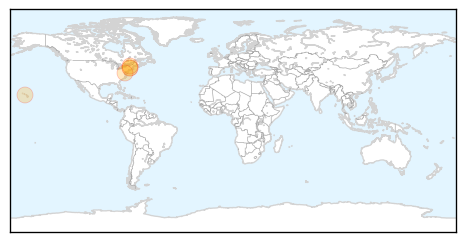
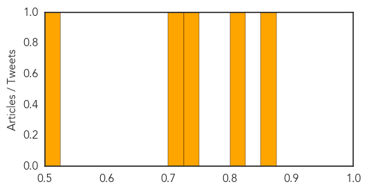
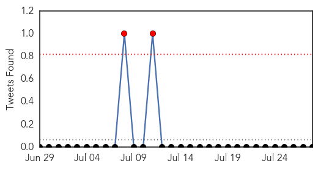
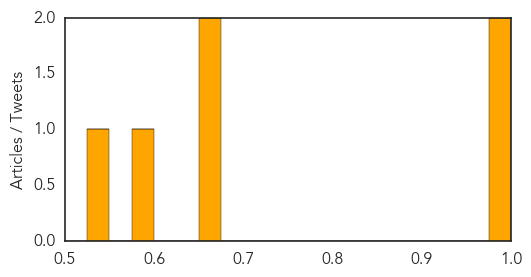

Pertussis
30-Day Web Trend
0 alerts, 0 warnings

30-Day Twitter Trend
0 alerts, 0 warnings

Article Locations
Article Confidences
Top Articles:
- 0.858
- How effective is whooping cough vaccine?
- 0.818
- Effectiveness of Whooping Cough Vaccine is Studied in Vt.
- 0.749
- Antibiotics are becoming less effective, and their overuse is making them dangerous
- 0.723
- Residents urged to protect ohana from whooping cough
- 0.513
- Scientists to call for Vermont kids' vaccine history
Top Tweets:
-
No tweets found for Jul 28, 2014
Dengue Fever
30-Day Web Trend
4 alerts, 2 warnings

30-Day Twitter Trend
2 alerts, 0 warnings

Article Locations

Article Confidences
Top Articles:
- 0.984
- Number of local dengue fever cases rising: CDC
- 0.982
- Dengue hub in dingy government houses
- 0.661
- Feds expose us to disease-carrying illegals
- 0.656
- Vulnerable areas: Qaim directs KWSB to start chlorination of water
- 0.598
- Hospital Freezes Staff Leave Due To Dengue Spike
- 0.538
- US Lawmakers Expand Probe of Federal Biolab Mishaps
Top Tweets:
-
No tweets found for Jul 28, 2014